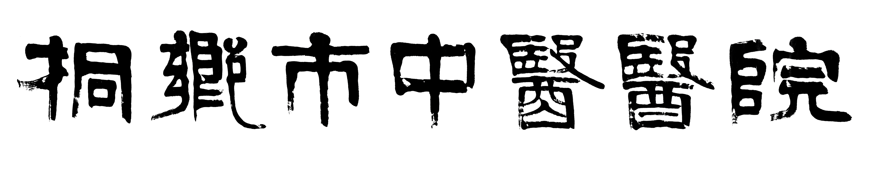

巴拉拉小魔仙 巴拉拉小魔仙巴拉拉小魔仙巴拉拉小魔仙巴拉拉小魔仙巴拉拉小魔仙巴拉拉小魔仙巴拉拉小魔仙巴拉拉小魔仙巴拉拉小魔仙巴拉拉小魔仙巴拉拉小魔仙巴拉拉小魔仙巴拉拉小魔仙巴拉拉小魔仙巴拉拉小魔仙巴拉拉小魔仙巴拉拉小魔仙巴拉拉小魔仙巴拉拉小魔仙巴拉拉小魔仙巴拉拉小魔仙巴拉拉小魔仙 巴拉拉小魔仙
古娜拉黑暗之神古娜拉黑暗之神古娜拉黑暗之神古娜拉黑暗之神古娜拉黑暗之神古娜拉黑暗之神古娜拉黑暗之神古娜拉黑暗之神古娜拉黑暗神古娜拉黑暗之神古娜拉黑暗之神古娜拉黑暗之神古娜拉黑暗之神古娜拉黑暗之神古娜拉黑暗之神古娜拉黑暗之神古娜拉黑暗之神古娜拉黑暗之神古娜拉黑暗之神古娜拉黑暗之神古娜拉黑暗之神古娜拉黑暗之神古娜拉黑暗之神古娜拉黑暗之神古娜拉黑暗之神古娜拉黑暗之神
喜欢我们就来关注我们吧